Թեստ 56
30:00
1. Ճանապարհի մաս հանդիսանում են արդյո՞ք մայթը կամ կողնակները
2. «Ճանապարհային երթևեկության անվտանգության ապահովման մասին» ՀՀ օրենքի համաձայն` տրանսպորտային միջոցի վարորդը պարտավոր է օժանդակելու նպատակով տրամադրել տրանսպորտային միջոցը`
3. Ավտոբուսների շահագործումն արգելվում է, եթե՝
4. Տրանսպորտային միջոցների շահագործումն արգելվում է, եթե՝
5. Եթե մտադիր եք խաչմերուկում կատարել ձախ շրջադարձ, ո՞ր տրանսպորտային միջոցին պետք է զիջեք ճանապարհը:
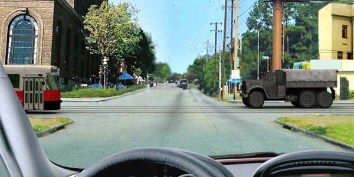
6. Ո՞ր նշանների ազդեցությունն է գործում միայն այն ժամանակահատվածում, որ ընթացքում երթևեկելի մասի ծածկույթը խոնավ է:
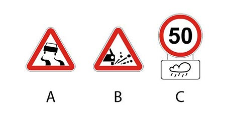
7. Խաչմերուկը երկրորդը կանցնի`
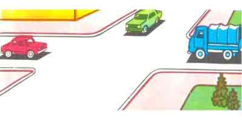
8. Տրանսպորտային միջոցները խաչմերուկը կանցնեն հետևյալ հերթականությանբ`
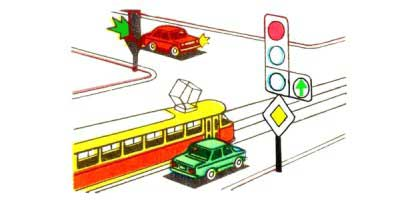
9. Թույլատրվում է արդյոք կանգառը նշված տեղում:
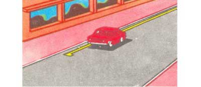
10. Տվյալ իրավիճակում որտե՞ղ կարելի է սկսել վազանցը:
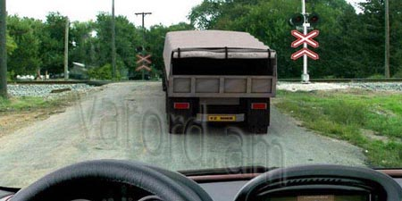
11. Թեթև մարդատար ավտոմոբիլի առջևի նստատեղին, եթե այն կահավորված չէ երեխաներին պահող հարմարանքով, թույլատրվում է փոխադրել երեխաներ, եթե լրացել է նրանց`
12. Թույլատրվու՞մ է արդյոք թեթև մարդատար ավտոմոբիլի վարորդին վազանց կատարել նշված իրադրությունում:
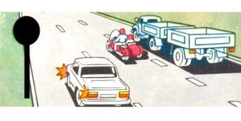
13. Թույլատրվո՞ւմ է պատահմամբ անցած խաչմերուկում հետընթաց վարմամբ շտկել և շարունակել երթևեկությունը մեզ անհրաժեշտ ուղղությամբ
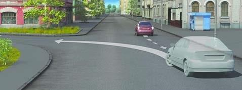
14. Այս ճանապարհային նշանը
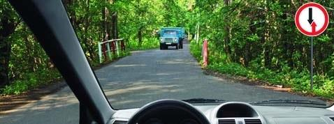
15. Նշաններից ո՞րի դեպքում կարող եք ձախ շրջադարձ կատարել
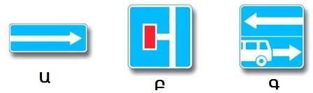
16. Նշված գոտուց ուղիղ երթևեկությունը
17. Թույլատրվո՞ւմ է կանգառ կատարել նշված վայրում
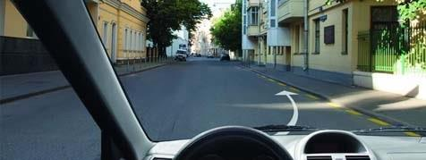
18. Զիջել ճանապարհը պարտավոր ենք
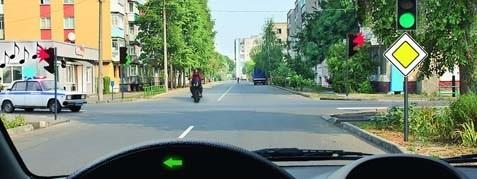